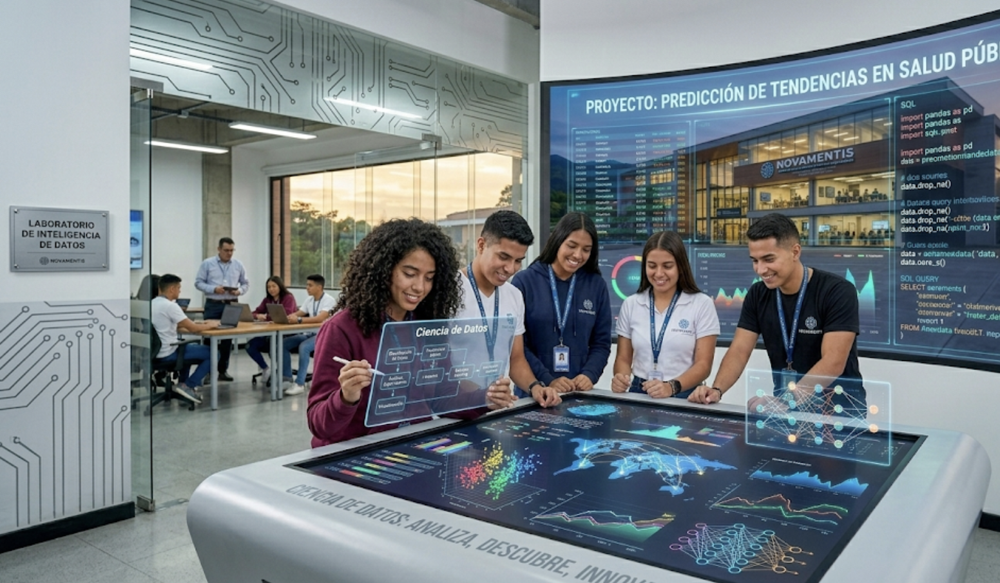
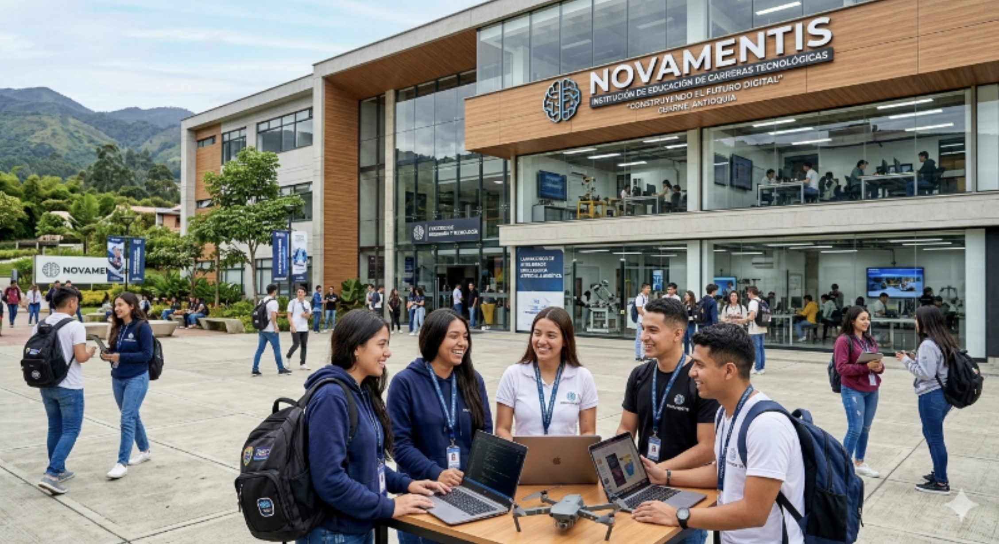
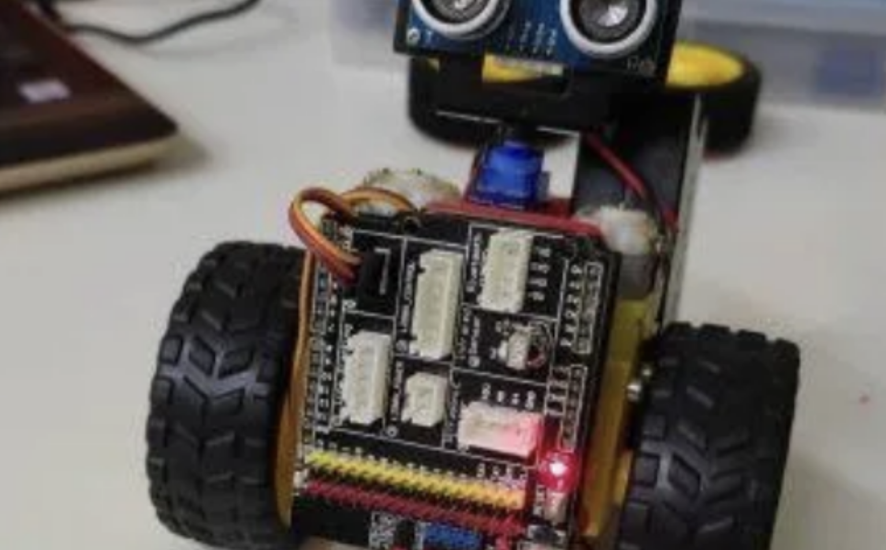
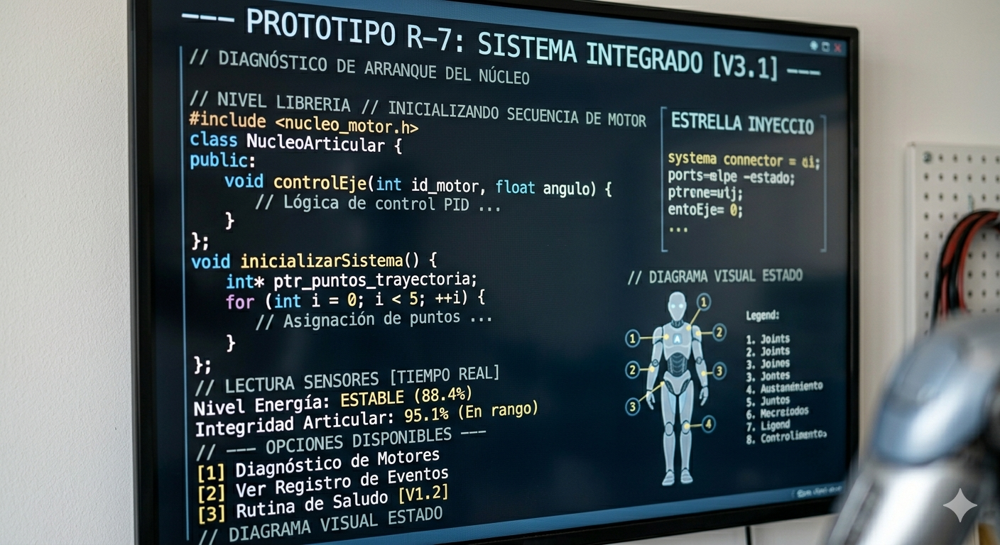

Ciencia de Datos
Está orientado hacia la formación de capital humano capaz de desarrollar sistemas computacionales para la captura, gestión, procesamiento y análisis de datos.


Está orientado hacia la formación de capital humano capaz de desarrollar sistemas computacionales para la captura, gestión, procesamiento y análisis de datos.

Capacita en el diseño, programación, instalación y mantenimiento de sistemas automatizados, robots industriales y sus componentes electrónicos. Enfocado en la industria 4.0.

Al finalizar el programa Técnico Laboral en Auxiliar en Análisis y Desarrollo de Software, el egresado contará con las capacidades para desarrollar aplicativos tipo web y para dispositivos.